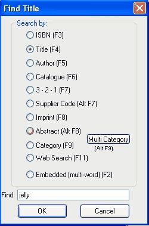
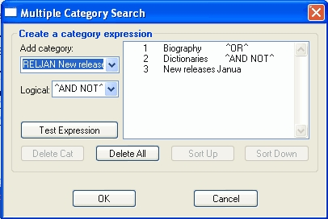

Select the radio button for search you wish to do.
| · | Type in the search criterion in the Find field and then press the Enter key.
|
| · | The Find window will close.
|
| · | If only a single title matches your search, the master window will display that title.
|
| · | For most searches, if more than one title is found, the List tab will be displayed with the products in the order of the search (e.g. after an author search, the products will be sorted by author). The selected product in the List browser will be the first product that meets your search criterion. Select the title you require either by selecting the line and pressing the Enter key or double-clicking the line with the mouse.
|
| · | For embedded and category searches, if more than one title is found, a pop up browser window will be displayed from which you can choose the title you want.
|
| · | For an ISBN search, if the title is not found, a pop up window will display, inviting you to search the Title Page, Nielsen BookData and Global BIP web sites to find the product.
|

|
Search methods
ISBN (F3)
Scan or type the ISBN into the Find field. The title you require will be displayed.
If the List view is displayed, the titles will be listed in ISBN order, with the one you entered selected and centered on the screen.
If the title is not found, a pop up window will display, inviting you to search the Title Page, Nielsen BookData and Global BIP web sites to find the product.
Title (F4)
Type in the start of the title, into the Find field. For example, if you want to search for the title 'Bourne Supremacy', type 'bourne' into the Find field. The program will search for all title starting with 'bourne'.
Hints on searching by title
| 1. | Don't type 'a', an' or 'the' at the start of your search string.
|
| 2. | Ignore upper or lower case.
|
| 3. | Stop typing before you get to an apostrophe or other punctuation mark; it may or may not have been included during data entry. For example, if you're looking for "Russia's Youth and Its Culture", just type in 'russia' and press the Enter key.
|
Author (F5)
Type the first few letters of the primary author into the Find field and press the Enter key.
If the List view is displayed, the titles will be listed in alphabetical order of author. The selected product in the List browser will be the first product that meets your search criterion.
Note that author name must be entered in the correct order: if the author appears in the title master as 'Brown, Dan' searching for 'brown' will work, but searching for 'Dan Brown' will not.
Catalogue (F6)
If you are using catalogue numbers (and this is usual for music stores), type the catalogue number of the product into the Find field. The title you require will be displayed.
If the List view is displayed, the titles will be listed in catalogue number order, with the one you entered selected and centered on the screen.
3 – 2 - 1 (F7)
The 3 – 2 – 1 code is made up from the title field and serves as a mnemonic shortcut. The code is derived from the title: It takes the:
| · | first three letters of the first word of the title,
|
| · | first two letters of the second word and
|
| · | first letter of the third.
|
| · | The following small words are ignored – a, an, the, of, and, to, as, on, in. For example: 'Jeeves and the Feudal Spirit' will have 3 – 2 – 1 code 'JEEFES'
|
| · | All punctuation is ignored – only letters and numbers as used.
|
| · | There are no spaces in the code. So 'P.G. Wodehouse: a Life' will have 3 – 2 – 1 code 'PGW'.
|
Type the 3 – 2 – 1 code into the Find field and press the Enter key and the requested title will be displayed. If the List view is displayed, the titles will be listed in 3 – 2 – 1 code order. The selected product in the List browser will be the first product that meets your search criterion.
Note that only part of the code need be typed; in one of the above example, searching for 'JEEF' will still find 'Jeeves and the Feudal Spirit'.
Supplier (Alt F7)
Type the supplier code into the Find field and press the Enter key.
The titles in the List tab will be listed in of supplier code order, with the first title for the supplier selected and centered on the screen.
Imprint (F8)
Type the imprint code into the Find field and press the Enter key.
The titles in the List tab will be listed in imprint order, with the first title with this imprint selected and centered on the screen.
Abstract (Alt F8)
In the Find field, type a search string and press the Enter key. The program will search the Abstract field for the string and will display the first title where it finds the string. Unless you can enter a search for a unique string, you may find the embedded search more useful as it will display all titles that meet the criteria
Category (F9)
For this search the Find field is replaced by a combo box. Enter the category code in the field, or select it from the drop-down box, and press the Enter key. A pop up window will display, listing all titles in that category. Select a required title from the list.
You can also do a multi-category search. See the section below.
Web Search (F11)
This is a powerful search enabling users to search the Title Page, Nielsen BookData and Global BIP web sites to find products. See the web search sections below.
Embedded (F2)
This is a powerful search that will look for a word or phrase in several fields of the title master. Type your search string into the Find field and press the Enter key. The program will search for any occurrence of your string in any of these fields: title, author, illustrator, abstract and comments.
If only one title meets your search criterion, that title will be displayed.
If more than one title is found, a pop up browser window will be displayed from which you can choose the title you want.
Multi-category Search (Alt + F9)
The multi-category search allows for the searching of categories using the logical operators: 'AND', 'OR' and 'AND NOT'. This allows you to narrow a search by excluding categories as well as including them.
To run the search:
| · | Click the Multi Category (Alt F9) button.
|
| · | Select the Add category drop-down field to select which category to add first category.
|
| · | Using the Add Category drop-down list and clicking on an item, you can add it to the search which is displayed in the list box.
|
| · | The default logical operator is 'or'; you can change it using the Logical combo box.
|
| · | When you have entered your search, click the OK button.
|
| · | As with the standard category search, a pop up browser window will be displayed from which you can choose the title you want.
|

In this example, the program will search for titles in either the Biography or Dictionaries categories that are not new releases from January.
Logical options:
| · | ^AND^ - 'A and B' - titles must be in both categories A and B.
|
| · | ^OR^ - 'A or B' - titles can be in either category, A or B.
|
| · | ^AND NOT^ - 'A and not B' - titles must be in category A and not in category B.
|
Testing the expression
If you have a complex expression, you can test that it is a valid search by clicking on Test Expression button.
Other Options
| · | Delete Cat Removes the selected category from the search.
|
| · | Delete All Clears all the current multi-category search criteria.
|
| · | Sort Up Swaps the category selected with the one above it.
|
| · | Sort Down Swaps the category selected with the one below it.
|